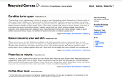

This is the Recycled Canvas Theme for Wordpress by the Creative Synthesis Collaborative This theme is retired (and unsupported), we encourage you to check out the Press Box theme at http://www.creativesynthesis.net/blog/projects/web-commodities/press-box/
Recycled Canvas is a clean minimalist theme theme for wordpress. With a variety of configuration options it presents the perfect canvas for building a blog, photoblog, or website.
Installation Instructions:- Drop the recycledcanvas folder into the wp-content/themes directory.
- Activate it and it should be working.
There are four views for the theme, and some other configuration options. Clockwise from top left, Box View, List View, Image View and Blog View.


- Clean simple theme in two default color schemes (light and dark)
- Renders great in all browsers! (IE6/7, Firefox, Safari, Opera)
- Additional stylesheets for print and mobile devices
- Customizable views, sidebar placement, and header image options
- Semantically Reasonable™ xhtml markup
Release Notes (Version: 1.0):
Minor bug fixes, additional chrome, and the 'normal' view looks more normal.
This theme bundles the following plugins (often with some heavy modification) for convenience of distribution. If you have any of these plugins installed already you may have some problems. If so disable the plugin while using the theme.
Configure via the Recycled Canvas Admin menu in the wordpress administration.
Plugin URI: http://guff.szub.net/post-image
Description: Display an image 'attached' to each post. Use post_image() or szub_post_image() in The Loop.
Version: R1.1.1
Author: Kaf Oseo
Author URI: http://szub.net/
Copyright (c) 2006, 2007 Kaf Oseo (http://szub.net)
Post Image is released under the GNU General Public License (GPL)
http://www.gnu.org/licenses/gpl.txt
(to comply with the gnu general public license you may license this work under the GPL)
Plugin Name: the_excerpt Reloaded
Plugin URI: http://guff.szub.net/the-excerpt-reloaded/
Description: This mod of WordPress' template function the_excerpt() knows there is no spoon.
Version: R1
Author: Kaf Oseo
Author URI: http://szub.net
Copyright (c) 2004, 2005 Kaf Oseo (http://szub.net)
the_excerpt Reloaded is released under the GNU General Public
License: http://www.gnu.org/licenses/gpl.txt
(to comply with the gnu general public license you may license this work under the GPL)
Plugin Name: Weighted Categories
Plugin URI: http://hitormiss.org/archives/2004/12/20/weighted-categories-list-in-wordpress/
Description: Template tag to display a weighted list of category links
Version: 1.2
Author: Matt Kingston
Author URI: http://www.hitormiss.org/
Hack Name: Wordpress Theme Toolkit
Plugin URI: http://frenchfragfactory.net/ozh/my-projects/wordpress-theme-toolkit-admin-menu/
Description: Helps theme authors set up an admin menu. Helps theme users customise the theme.
Version: 1.12
Author: Ozh
Author URI: http://planetOzh.com/